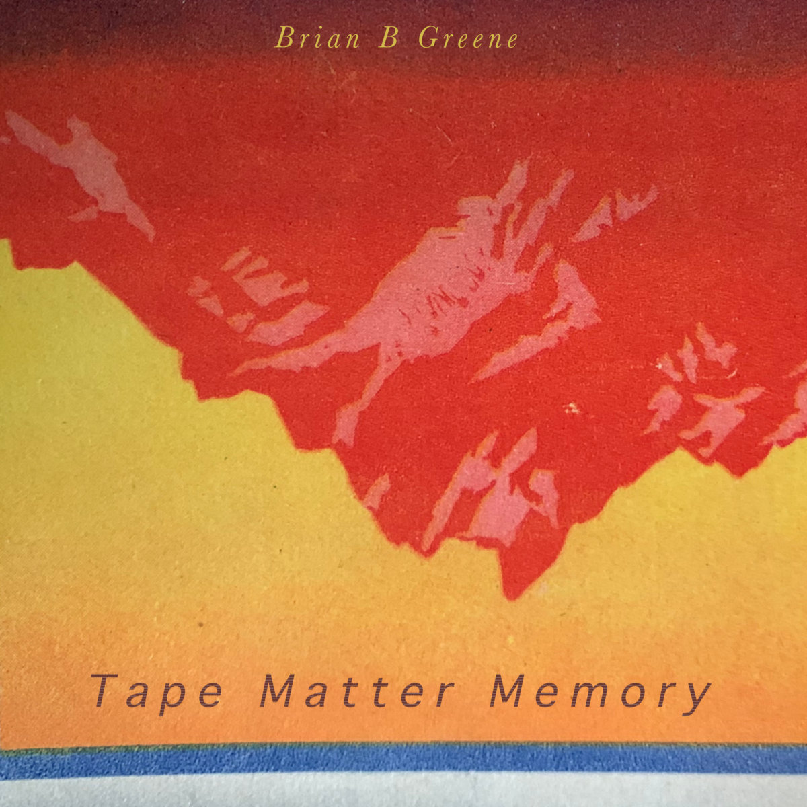

Brian B Greene
Composer and musician from Northern Ireland, based in Berlin.
About
Brian B Greene is a composer, multi-instrumentalist and producer from Northern Ireland, based in Berlin. His work draws on electronics, tape, voice and drums, focusing on repetition, texture and material change.
His music and collaborations have appeared on Planet Mu, Kinnego Records, Airflex Labs, Rudimentary Records and Reset Industries. Previous work includes collaborations with Barry Lynn / Boxcutter and David Baxter / Kab Driver, as well as Kinnego Flux, a long-running project with Baxter.
Current release · 4 September 2026
Tape Matter Memory

Tape Matter Memory is a collection of fifteen short experimental pieces developed through tape and tape loops, alongside voice, drums, strings, noise, synthesis and other acoustic and electronic sources. The record grew through repetition, close listening and small alterations, allowing sounds and gestures to wear, shift and return in different forms.
Written, recorded, produced and mastered by Brian B Greene.
- Listen on Bandcamp
- Download promo MP3s (320kbps) (WAVs on request)